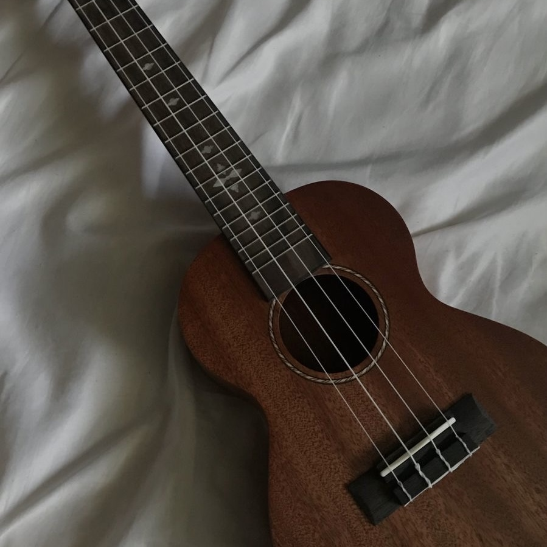
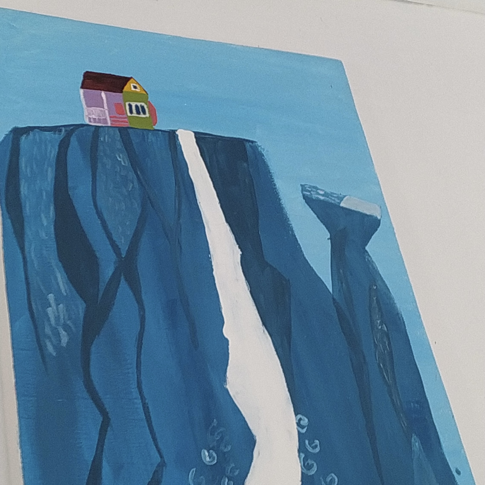
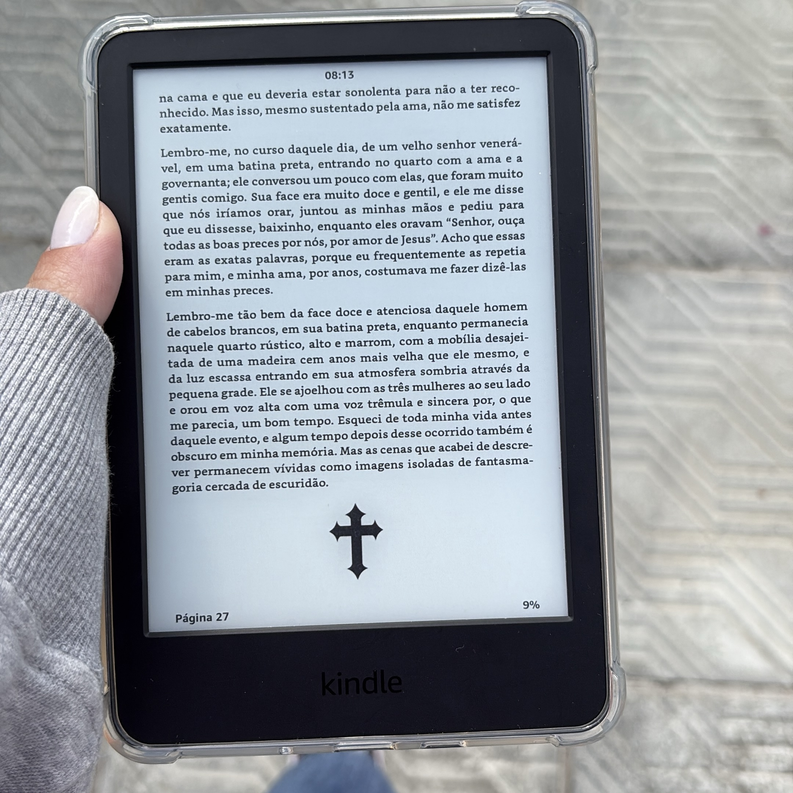

Quem sou eu?

Letícia Schütze - amante do aprendizado
Quem sou eu?
Letícia Schütze - amante do aprendizado
Sou apaixonada pela vida e aprender, estou cursando administração e este técnico em desenvolvimento de sistemas, buscando ter um emprego estável para poder realizar o que quero com conforto. Clicando abaixo, você pode conhecer um pouco mais sobre minhas ideias e planos futuros.
Ukulele: Amo música e som, me emociono facilmente e gosto de todo tipo, poder tocar é maravilhoso para compartilhar

Pintura: Onde posso expressar sentimentos e consigo decorar minhas coisas com o meu estilo, e dar como presente também

Leitura: Um jeito de escapar um pouco desse mundo, aprender coisas novas e ver o mundo de perspectivas (e lugares) que ainda não conheci
